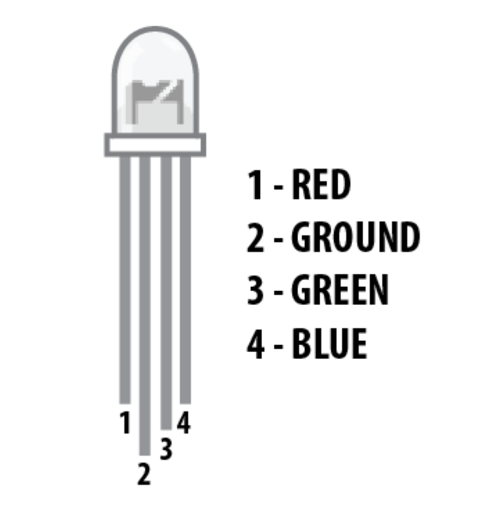

RGB LEDs (multi-color LEDs)
RECOMMENDED: Before reading this component guide, consider reading the PWM advanced Arduino Guide. That guide will teach you how to make an LED dimmer or brighter, which is important for this one.
An RGB LED is an LED that can be any color in the RGB color spectrum. An RGB is actually just three different LEDs in one: a red one, a green one, and a blue one. All three of the LEDs share a common cathode, or ground/negative end.
Wiring RGBs
To wire an RGB LED to the Arduino, connect the “ground” end to the GND Arduino pin and connect the other three ends to three digital pins with PWM (‘~’) on the Arduino with 330 ohm resistors. It should look something like this:

Coding RGBs
You code an RGB LED in the same way as you would if you were using 3 separate LEDs. You will probably want to declare variables for the pin of each LED for clarity:
int redLED = 11;
int blueLED = 10;
int greenLED = 9;
void setup
In void setup(), declare each of the three pins that you are using as OUTPUTs with the pinMode function:
void setup(){
pinMode(redLED, OUTPUT);
pinMode(blueLED, OUTPUT);
pinMode(greenLED, OUTPUT);
}
void loop
In void loop(), you will need to use the analogWrite(); function for each led color to determine how much of each color you want to show. In order to make the LED shine a specific color you will need the RGB code of that color. For example, the RGB code for midnight blue is 25-25-112. This means that the red LED should be set at a brightness of 25, the green LED should be set to a brightness of 25, and the blue led should be set to a brightness of 112. In the code, this will look like this:
void loop(){
analogWrite(redLED, 25);
analogWrite(greenLED, 25);
analogWrite(blueLED, 112);
}
Sample Code
After running this code, you should see the led turn a midnight blue color. Try looking up the RGB code of your favorite color online. Change the red, green and blue values in your code to the values that you found (red is the first number in the code, green is the second number, red is the third number).